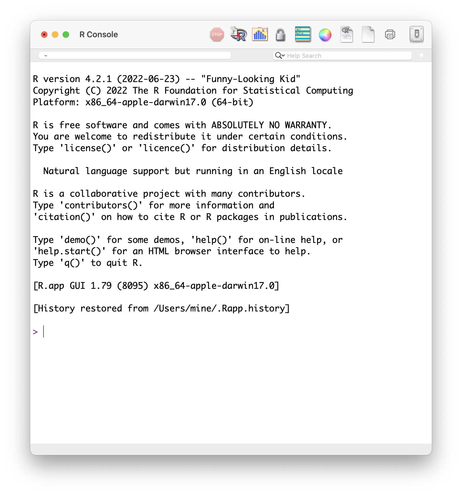
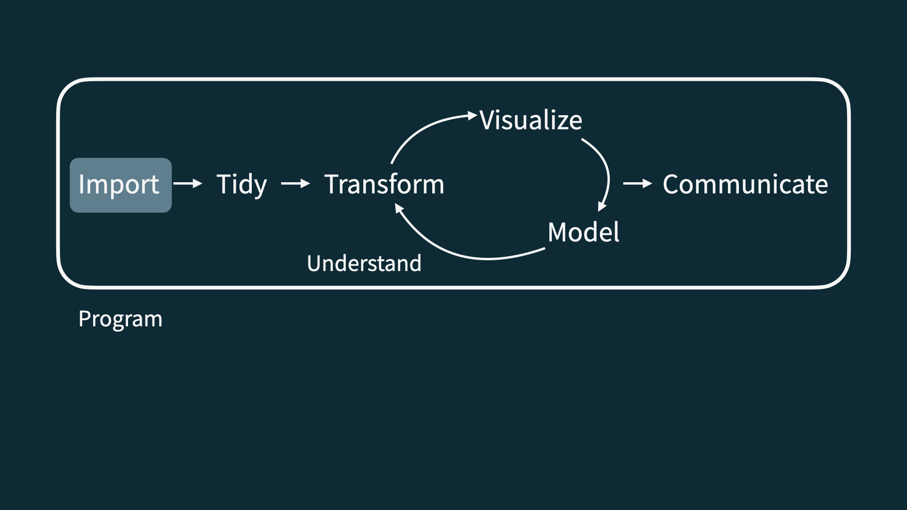
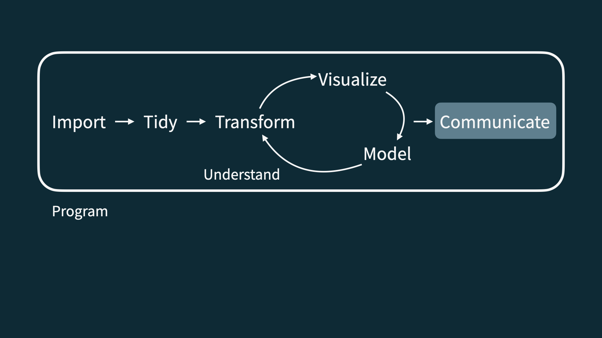

Welcome to STA 199!
Lecture 0
May 14, 2025
Hello world!
Meet the team
Instructor
Marie Neubrander
Old Chem 203
marie.neubrander@duke.edu
Course Coordinator, Lab Instructor
Dr. Mary Knox
mary.knox@duke.edu
Meet each other!
- Name
- Year
- Hometown
- Something you plan to do this summer
Meet data science
Data science is an exciting discipline that allows you to turn raw data into understanding, insight, and knowledge.
Software
Excel - not…

R

Data science life cycle
Data science life cycle

Import

Tidy + transform

Visualize

Model

Understand

Communicate

Understand + communicate

Program

Course overview
Activities
- Introduce new content and prepare for lectures by watching the videos and completing the readings
- Attend and actively participate in lectures and labs, office hours, team meetings
- Practice with application exercises during lecture
- Use what you’ve learned to analyze real-world data
- Lab assignments x 6
- Exams x 2
- Term project
Application exercises
Daily-ish in lecture
“Graded” for attempt, not accuracy
Practice this week; graded thereafter
At least one commit by 10:45am of the day of lecture
Turn in at least 80% for full credit
Labs
Monday and Thursday; right after lecture
Start in lab session, complete at home
-
Due dates (typically):
Monday Lab: Due Wednesday at 11:59 PM
Thursday Lab: Due Sunday at 11:59 PM
Discussion with classmates = ü§© ; Copying = ‚ùå
Lowest score dropped
Exams
Two exams, each 20%
-
Midterm (June 3) has two parts:
In class: 75 minute in-class exam. Closed book, one sheet of notes (“cheat sheet”) – 70% of the grade
Take home: After the in class exam; analyze a dataset – 30% of the grade
Final (June 26): Closed book, one sheet of notes (“cheat sheet”).
Caution
Exam dates cannot be changed. If you cannot take the exams on these dates, please have a discussion with me today.
Project
Dataset of your choice, method of your choice
Teamwork
Presentation and write-up
Presentations in the last lab (June 23)
Interim deadlines, peer review on content, peer evaluation for team contribution
Some lab sessions allocated to project progress
Caution
Final presentation date cannot be changed; you must complete the project to pass this class.
Teams
- Assigned by me
- Project
- Peer evaluation during teamwork and after completion
- Expectations and roles
- Everyone is expected to contribute equal effort
- Everyone is expected to understand all code turned in
- Individual contribution evaluated by peer evaluation, commits, etc.
Grading
| Category | Percentage |
|---|---|
| Labs | 30% |
| Project | 20% |
| Exam 1 | 20% |
| Exam 2 | 20% |
| Application Exercises | 10% |
See course syllabus for how the final letter grade will be determined.
Support
- Attend office hours
- Ask and answer questions on the Ed discussion board
- Reserve email for questions on personal matters and/or grades
Office Hours
Marie: Old Chem 203
Tuesday 3:30PM - 5:30PM
Friday 1:00 - 3:00 PM
Mary: Zoom
Time TBD
Announcements
- Posted on Canvas (Announcements tool) and sent via email, be sure to check both regularly
- All information is on the course website - please refer to it often!
Homepage
- All course materials
- Links to Canvas, GitHub, RStudio containers, etc.
Course toolkit
All linked from the course website:
- GitHub organization: github.com/sta199-su25
- RStudio containers: cmgr.oit.duke.edu/containers
- Communication: Ed Discussion
- Assignment submission and feedback: Gradescope
Accessibility
The Student Disability Access Office (SDAO) is available to ensure that students are able to engage with their courses and related assignments.
I am committed to making all course materials accessible and I’m always learning how to do this better!
Course policies
Late work, waivers, regrades policy
- We have policies!
- Read about them on the course syllabus and refer back to them when you need it
If you need testing accommodations
Make sure I get a letter, and make your appointments in the Testing Center now.
Collaboration
Labs: discussing and helping is fine. Sharing your solutions and copying others is not;
Exams: collaboration of any kind is completely forbidden on any part of any exam;
Projects: collaboration of any kind is enthusiastically encouraged within your team. Between teams, it’s the same as labs; do not directly share your stuff or copy off of others.
Use of AI tools
-
AI tools for code:
- Sure, but be careful/critical! Working code
!=correct/good code. - Must explicitly cite with a direct url linking to the conversation you had.
- Sure, but be careful/critical! Working code
AI tools for narrative: Absolutely not!
AI tools for learning: Sure, but be careful/critical!
Academic integrity
To uphold the Duke Community Standard:
I will not lie, cheat, or steal in my academic endeavors;
I will conduct myself honorably in all my endeavors; and
I will act if the Standard is compromised.
GitHub

What is GitHub?
More on this tomorrow - basically, it is the Google Drive of coding!
AE0: Make your GitHub account
Find AE0 on the course website!
This week’s tasks
- Complete Lab 0
- Computational setup
- Getting to know you survey
- Read the syllabus
- Start readings for next week